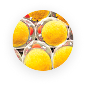

Výhody ovoce Fortunella

Ovoce roste v jižní Asii, mezi nejbohatší květenou na planetě, kde je již dlouho známá svými vlastnostmi, a proto je po celém světě oblíbená po celá desetiletí. Toto ovoce pomáhá rozkládat tuk a přeměňovat ho na energii.

Ničí tukové buňky. Rozkládá tuky a přeměňuje je na energii.

Posiluje imunitní systém. Obnovuje vitalitu a stimuluje fyzickou aktivitu, zvyšuje vytrvalost.

Čistí tělo. Obnovuje přirozenou rovnováhu v těle.
Ovoce Fortunella, hlavní složka kapek, ale ne jediná. Každá ze součástí obsažených v produktu je užitečným prostředkem pro hubnutí. Všechny složky se nacházejí samostatně v mnoha produktech na hubnutí. Ale v kapkách Fortunella jsou kombinovány pro maximální účinnost.